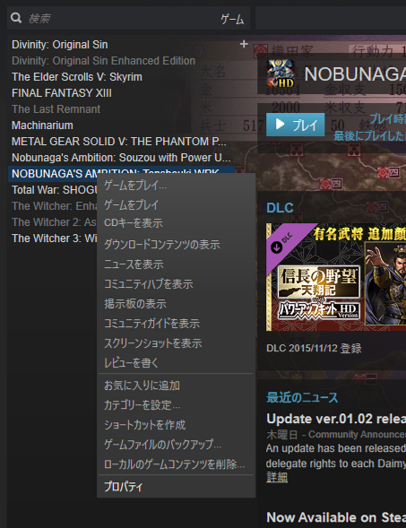
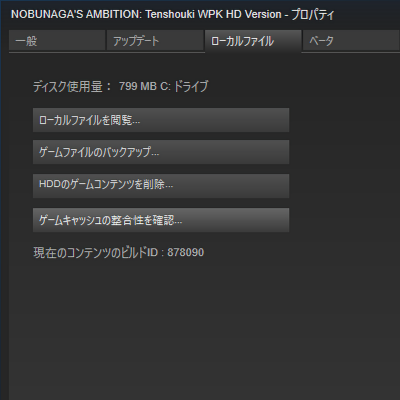
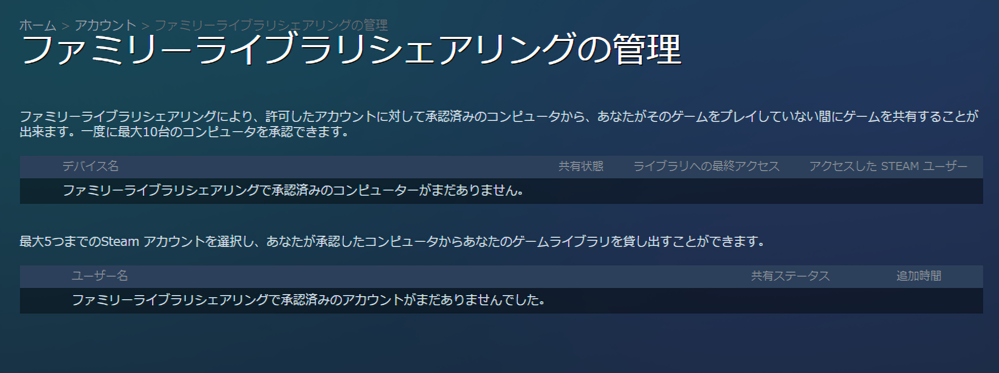
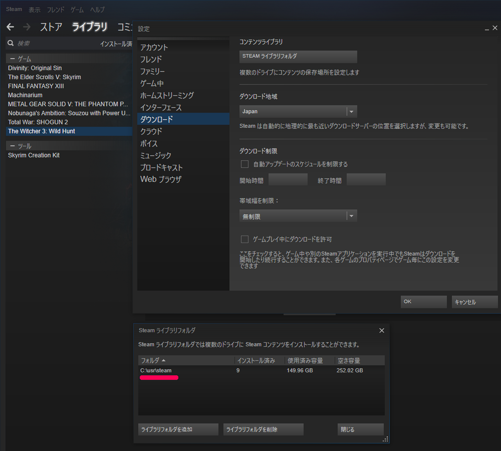

Steamで購入したゲームはデータの購入というよりも、ゲームプレイの権利の購入です。
PS4やXBox One等の最近の家庭用ゲーム機と同じで、
「自分のアカウントに紐づけてゲームの権利を購入する」という考え方ですね。
ですので、ゲームデータはいつでもインストールや削除が自由です。
削除した後、いつでも再インストールが可能です。
一度Steamで購入したゲームは、別のPCにもインストール可能です。
ですので、手持ちのデスクトップとノートの両方に同じゲームを入れておくことは、
何ら問題のない行為となります。
同じSteamアカウントが共有できている限り、台数の制限はありません。
SteamはローカルのPCファイルと、Steamサーバー上の最新のゲームファイルを比較して
食い違っているファイルを再度ダウンロードするという機能があります。
この機能は便利であり、結構頻繁に利用しますので覚えておきましょう。
「ライブラリ」復元したいゲームを右クリック「プロパティ」をクリック。
「ローカルファイル」というタブを選択して、「ゲームキャッシュの整合性を確認」を実行します。


ファミリーライブラリシェアリングという機能を使えば、
仲の良い友人や家族などを「ファミリー登録」して、
お互いにゲームの貸し借りが出来ます。
但しファミリー登録無限ではなく10台のPC、５つのアカウントといった制限があります。
2人が同時にプレイしている状況になった場合、
貸している側(購入済の人)のプレイが優先され、
借りている側のゲームは終了します。

設定ファイルやセーブデータは
PCの「マイドキュメント」以下の「各ゲーム名のフォルダ」以下にあります。
よって、ゲームを別PCへと移動する場合には、
マイドキュメント以下もコピーし忘れないようにしましょう。
デフォルトの設定では、
Steamのゲームは「Steamインストールフォルダ」以下の「\steamapps\common」のサブフォルダに
全てインストールされます。
しかし、Steamのライブラリフォルダを追加することで、
規定のフォルダ以外にもインストールすることが可能となっています。
Steamアプリケーションのトップメニューから、
「Steam」「設定」「ダウンロード」「STEAM ライブラリフォルダ」をクリック。 
Modでフォルダ内のファイルを書き換える必要があるような場合、
「Program Filesなど、UAC制限があるフォルダ」以外へのフォルダにインストールすることが
望ましいシーンもあります。
又、SSDの空き容量が少なくなり、HDDへとゲームを引っ越す場合に、
「特定のゲームだけフォルダをお引越し」といった用途でも使えます。
Modとは、ユーザーによって作成された新規コンテンツや改変コンテンツを指します。
Steamのゲームでは、好みのModの導入や、Modの作成はごく普通の行為とされており、
Steam内でもツール提供や、Modのダウンロードなどの環境が整備されています。